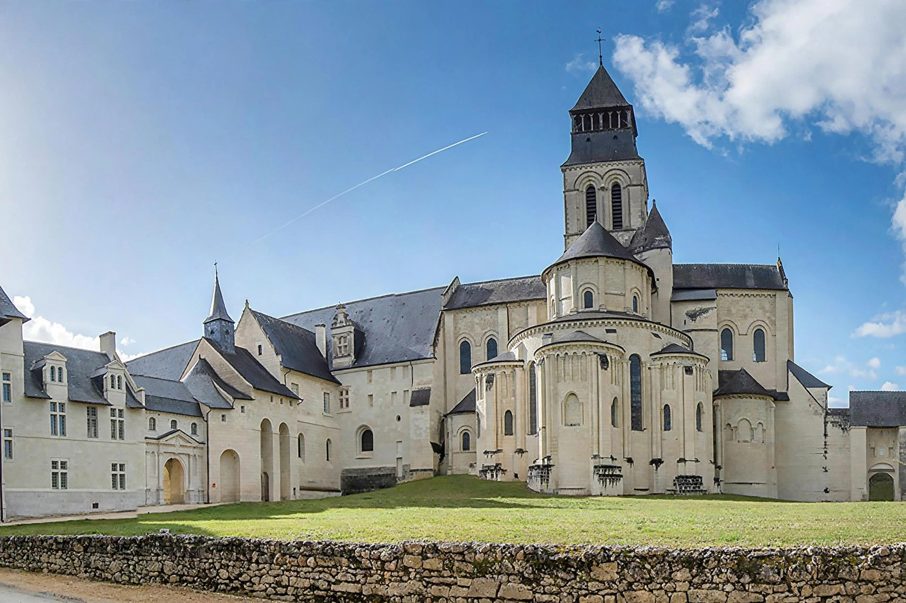

| Fontevraud Abbey | |
|---|---|
| Location | Fontevraud-l'Abbaye, Maine-et-Loire, France |
| Founded | 1101 |
| Founder | Robert of Arbrissel |
| Order | Order of Fontevraud |
| Dissolved | 1792 (French Revolution) |
| Later use | Prison (1804–1963); cultural centre today |
The Royal Abbey of Our Lady of Fontevraud (French: Abbaye royale Notre-Dame de Fontevraud) is a former abbey in the commune of Fontevraud-l'Abbaye, near Chinon, in Anjou, France. Founded in 1101 by the itinerant preacher Robert of Arbrissel, it became one of the largest monastic cities of medieval Europe — a "double monastery" of nuns and monks governed, unusually, by an abbess. Fontevraud was the necropolis of the Plantagenet dynasty: Henry II of England, his queen Eleanor of Aquitaine, and their son Richard I (the Lionheart) were buried here.
Robert of Arbrissel settled his mixed community of followers — men and women, rich and poor, including widows and reformed prostitutes — in the valley of Fontevraud in 1101. Placing the community under the rule of an abbess drawn often from the highest nobility (the first was Petronilla of Chemillé), Fontevraud became head of an order of priories across France, England, and Spain. The abbey's great Romanesque church, consecrated in 1119, received the tombs of the Plantagenets; the painted recumbent effigies (gisants) of Henry II, Eleanor of Aquitaine, Richard I, and Isabella of Angoulême survive in the nave.
After centuries of prosperity and decline, the abbey was dissolved in the French Revolution, and in 1804 Napoleon converted the buildings into a prison — one of the harshest in France — which operated until 1963. Extensive restoration followed, and the abbey is now a cultural centre and museum; it forms part of the Loire Valley UNESCO World Heritage Site.
The complex preserves the abbey church, with its domed nave of Angevin Romanesque character; the cloister; the chapter house with 16th-century paintings; and the famous Romanesque kitchens, a polygonal building with multiple chimneys resembling a beehive. Eleanor of Aquitaine, who retired to Fontevraud and died there in 1204, is shown in her effigy reading a book — unique among the Plantagenet tombs.